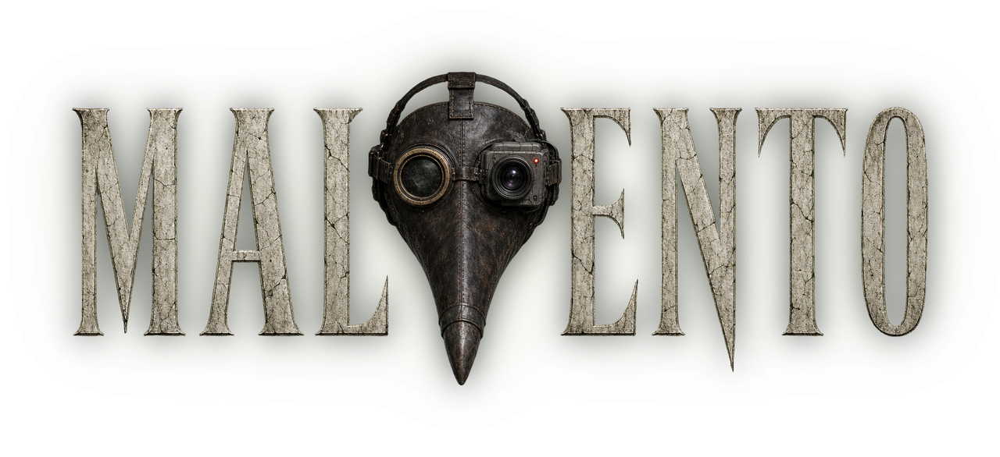
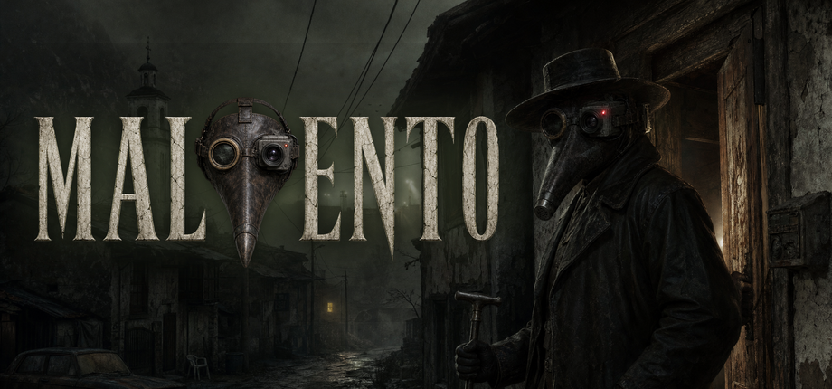
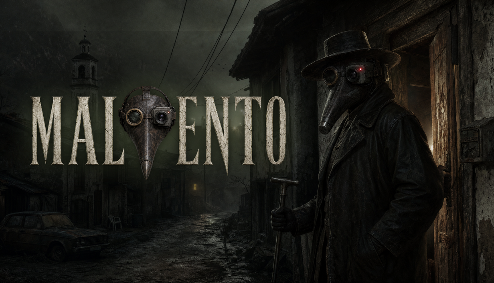
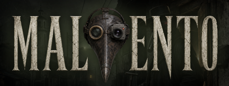
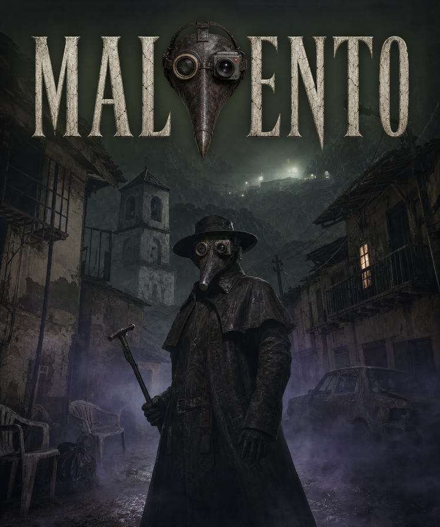
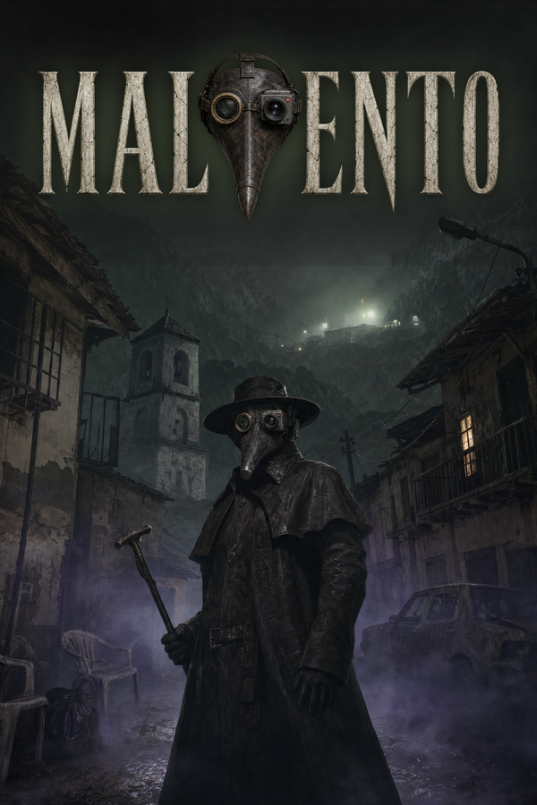
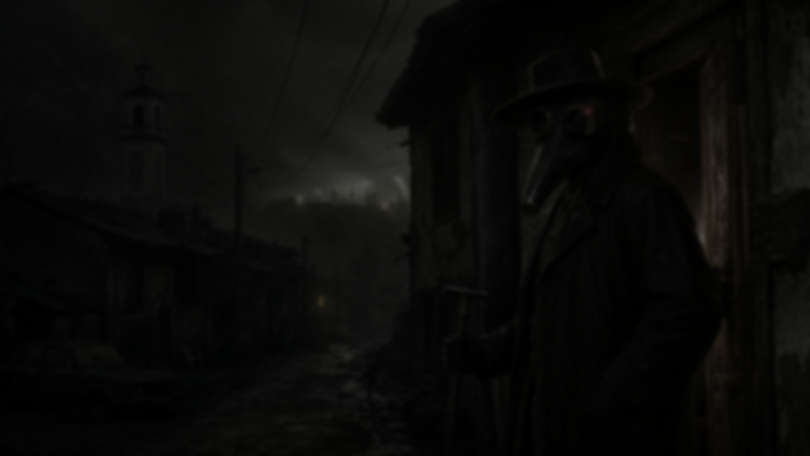
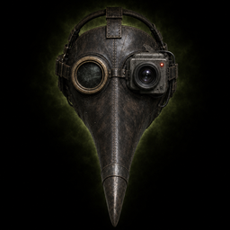

Malvento
Le immagini sono nelle misure di Steamworks e i testi sono pronti da incollare, in inglese e in italiano. Sopra, l'hero della libreria con il logo: in Steam il logo si sposta dove vuoi.
Le capsule
Sulle capsule solo il logo e l'illustrazione, come chiede Steam: niente frasi, premi o voti. La piccola deve leggersi nelle liste, per questo è quasi solo logo.








L'hero della libreria (3840 × 1240, PNG) è l'immagine in cima a questa pagina, senza logo.
Gli screenshot
A 1920 × 1080, presi dal gioco in inglese.
I testi
Descrizione breve
About This Game
Tag
I contenuti fatti con l'AI
Steamworks lo chiede nel questionario dei contenuti («AI Generated Content»). Si scrive in inglese.
Pre-generated content
The 2D scenes, the characters, their expressions and close-ups, and the newspaper photos were generated with AI image models (OpenAI GPT Image 2 and Google Nano Banana Pro, through fal.ai) from the developer's descriptions and reference sheets, then edited, combined and color-graded by the developer. Some 3D furniture and props were generated with Meshy and then edited; the rest of the doctor's room uses CC0 models and materials from Poly Haven. The music was generated with ElevenLabs Music and Stable Audio, the sound effects with ElevenLabs Sound Effects. The game's texts were written with the help of an AI assistant, under the developer's direction, and edited. The logo and store art were generated with AI image models and edited by the developer.
Live-generated content
None: the game does not generate anything with AI while it runs.
Lingue, contenuti, requisiti
| Voce | Cosa scrivere |
|---|---|
| Lingue | Italiano e inglese: interfaccia e sottotitoli. Niente doppiaggio: i dialoghi sono scritti. |
| Violenza e sangue | Sì, non realistici e non frequenti: malati, sangue tossito, trasformazioni in mostri. |
| Contenuti per adulti | Sì: malattia, morte, orrore del corpo, temi disturbanti. Età consigliata 16+. |
| Nudità e sesso | No. |
| Requisiti minimi | Windows 10 a 64 bit, processore dual core da 2 GHz, 4 GB di RAM, scheda video DirectX 11 / WebGL 2 (Intel HD 620 o meglio), 1 GB di spazio. |
| Consigliati | Windows 10/11 a 64 bit, 8 GB di RAM, GeForce GTX 1050 o Radeon RX 560 o meglio. |
| Comandi | Mouse e tastiera, oppure il controller. |
I file sono nel repository, in art/steam/uscita; si rifanno con python3 tools/steam.py. Le misure vengono dalla pagina Graphical Assets di Steamworks.